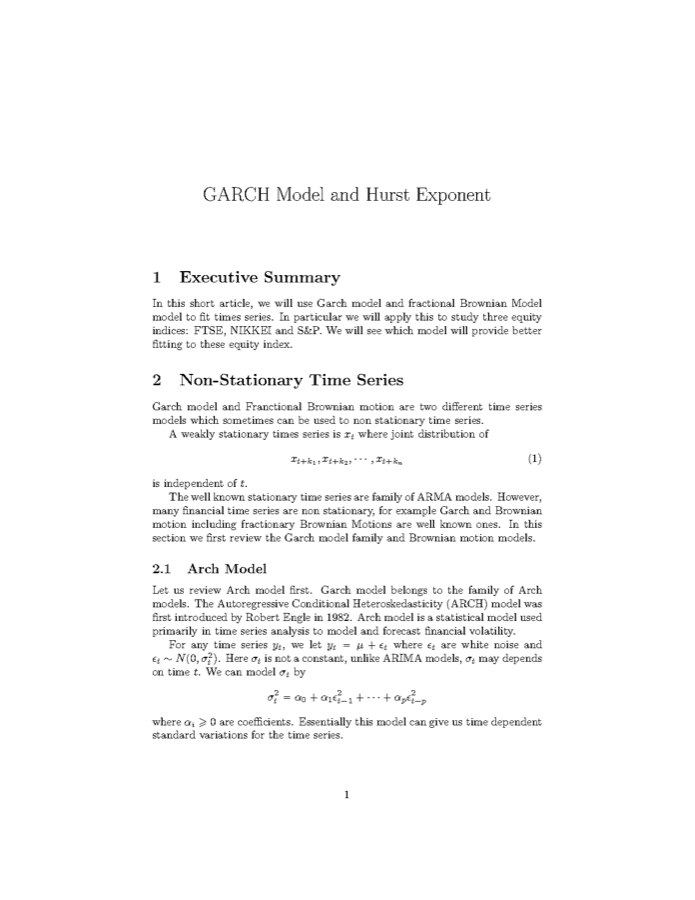

Problem
Describe volatility clustering and compare path-roughness estimates across three major equity indices.
Selected work · LSE Statistical Challenge
Completed team projectA careful reconstruction of a team project using GARCH(1,1), maximum likelihood, PACF diagnostics and Hurst estimation.
Team Lead · Jan 2025 – Mar 2025
Describe volatility clustering and compare path-roughness estimates across three major equity indices.
Daily FTSE 100, Nikkei 225 and S&P 500 prices, approximately Feb 2004 – Feb 2024.
Returns, PACF diagnostics, GARCH(1,1) by maximum likelihood and Hurst estimation.
No unverifiable 15% fit-improvement claim and no trading-strategy inference.
Problem & data
The project used roughly 20 years of daily prices for the FTSE 100, Nikkei 225 and S&P 500. Returns were constructed before volatility modelling. GARCH(1,1) describes time-varying conditional variance, while the Hurst exponent provides a separate path-dependence and roughness summary under the report's estimator.
Analytical workflow
rt = (Pt − Pt−1) / Pt−1
σt2 = ω + αεt−12 + βσt−12
Results
Under the estimator used in the report, all three values are below 0.5 and the FTSE path appears relatively rougher. This is a descriptive result, not a stable trading rule.
The estimated α + β values are close to one, indicating high volatility persistence in the fitted GARCH models. They are not prediction accuracies.
| Index | α | β | α + β | Log-likelihood | AIC | BIC |
|---|---|---|---|---|---|---|
| FTSE 100 | 0.1000 | 0.8800 | 0.9800 | 16590.4 | −33174.7 | −33155.1 |
| Nikkei 225 | 0.1012 | 0.8784 | 0.9796 | 14576.6 | −29147.2 | −29127.7 |
| S&P 500 | 0.1000 | 0.8800 | 0.9800 | 16479.6 | −32953.1 | −32933.6 |
Interpretation & limitations
The project strengthened my ability to move from mathematical definitions to an applied modelling workflow, read diagnostic output and revise an initial interpretation when the evidence did not support a stronger claim.

The original PDF is preserved as source material. This web case revises several explanations for technical accuracy while keeping the reported estimates unchanged.
Download original report